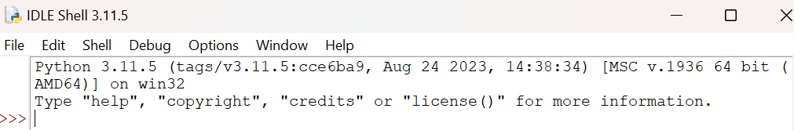
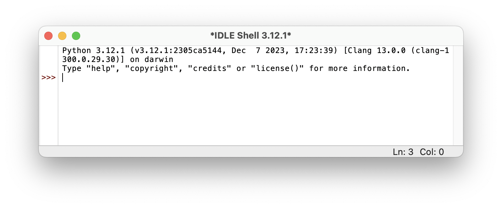
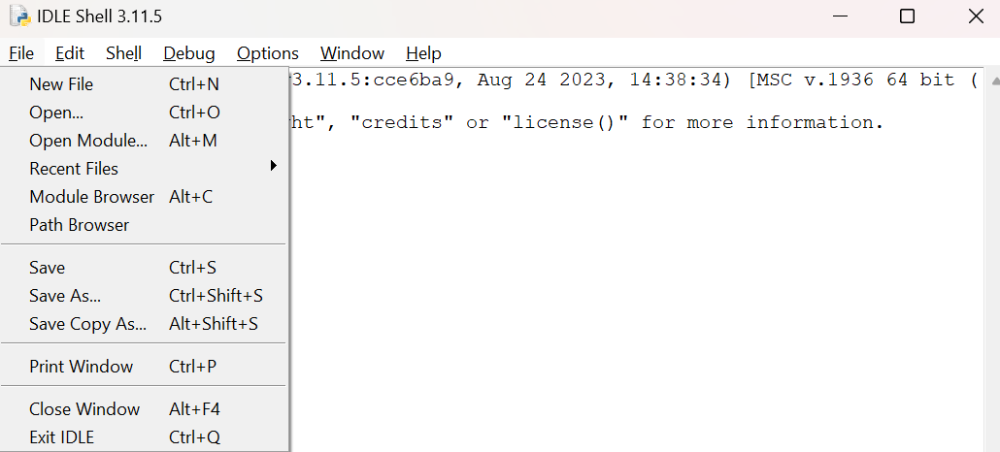
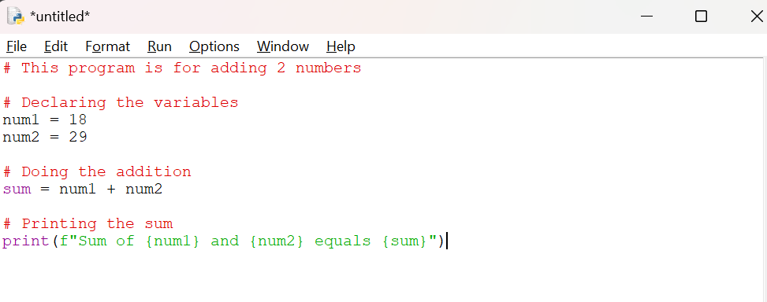
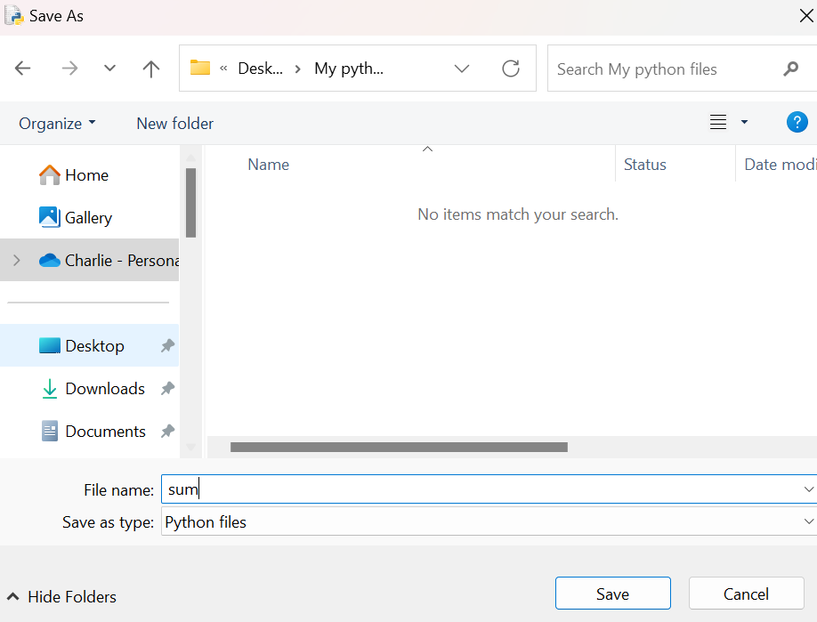
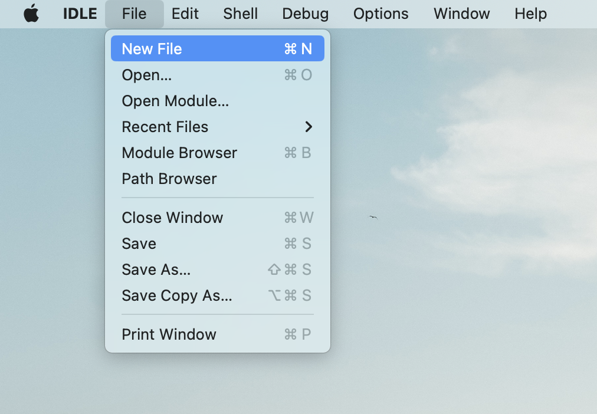
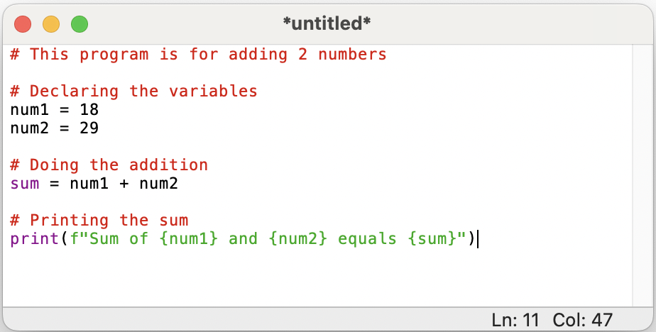
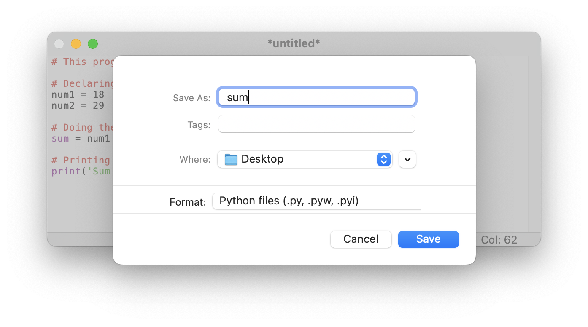

IDLE#
Video Tutorial
Tip
You can copy and paste code in the code blocks by hovering your mouse over the code block and pressing the icon () appearing in the top right corner.
IDLE is an integrated development environment (IDE) installed automatically with Python. It provides you with an environment where you can write Python scripts and run them or write Python code line by line to execute immediately.
IDLE is lightweight, simple, and great for introducing how to do coding projects. Therefore, it is well suited for beginners.
Note
We only recommend introductory students to use IDLE while following 02002/02003.
IDLE is mainly useful for learning how to interact with Python scripts and snippets. More advanced IDE’s will be introduced in many DTU courses.
Getting started#
Open IDLE.
Open up a terminal (see here) and type, then press Enter
idle
You will see the following screen:
{kind=link}

The text you see indicates that you have opened a Python Shell. The lines starting with “>>>” are meant for Python code. Try typing or pasting in the following and press enter.
print("hello")
Open up a terminal (see here) and type, then press Enter
idle3
You will see the following screen:
{kind=link}

The text you see indicates that you have opened a Python Shell. The lines starting with “>>>” are meant for Python code. Try typing or pasting in the following and press enter.
print("hello")
Creating and running scripts#
A Python script is a file with Python code. Once the script is run, all the code is executed. This is great for larger jobs and allows for reuse of your code.
Go to in the IDLE menu to create a Python script.

You should see a blank page. Type or paste the following code
# This program is for adding 2 numbers # Declaring the variables num1 = 18 num2 = 29 # Doing the addition sum = num1 + num2 # Printing the sum print(f"Sum of {num1} and {num2} equals {sum}")

Go to and save the script as
sum.py
Run the script. In the top menu, go to (or press F5). You should now see some output.
{kind=link}
{kind=link}
{kind=link}
Go to in the IDLE menu to create a Python script.

You should see a blank page. Type or paste the following code
# This program is for adding 2 numbers # Declaring the variables num1 = 18 num2 = 29 # Doing the addition sum = num1 + num2 # Printing the sum print(f"Sum of {num1} and {num2} equals {sum}")

Go to and save the script as
sum.py
Run the script. In the top menu, go to (or press F5). You should now see some output.
{kind=link}
{kind=link}
{kind=link}
You can now modify and run the script as much as you want.
As mentioned, IDLE is best suited for simple projects. Later during the 1st semester you will be introduced to Visual Studio Code.